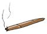
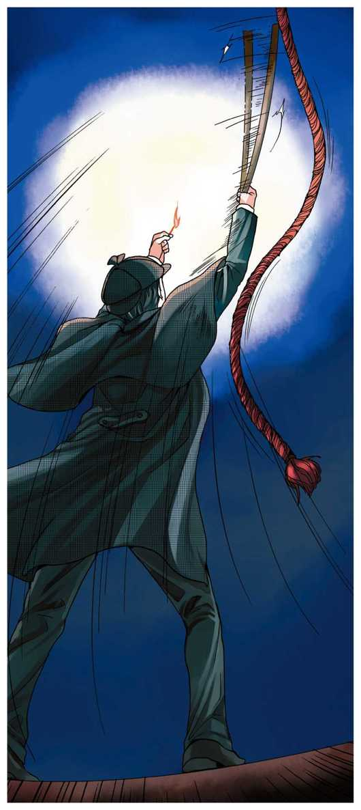
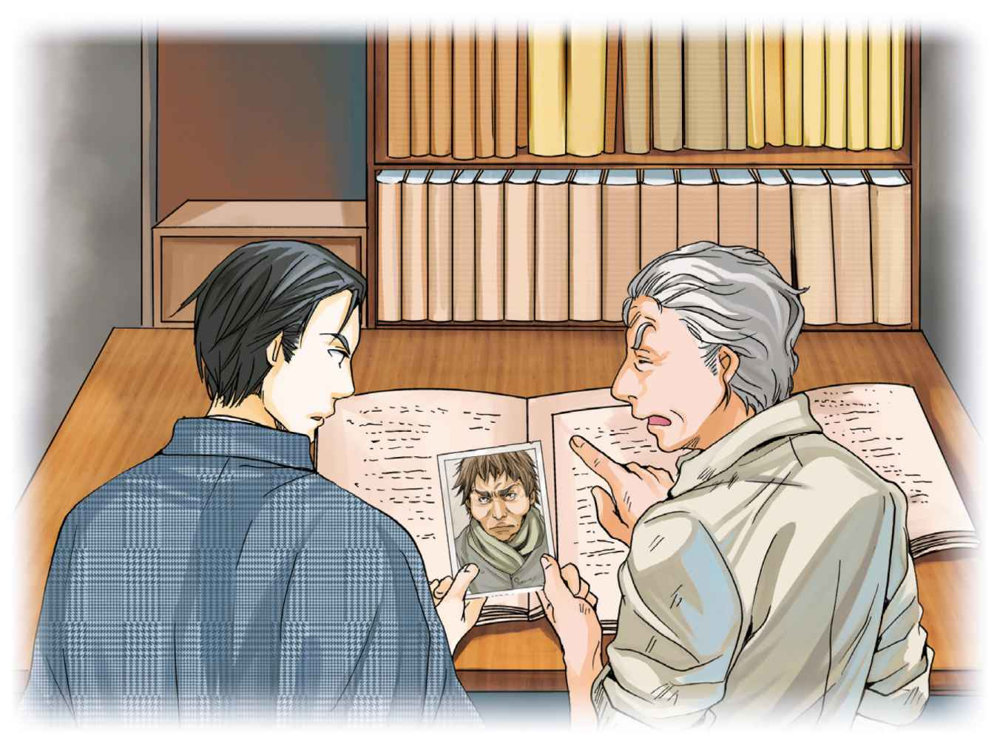
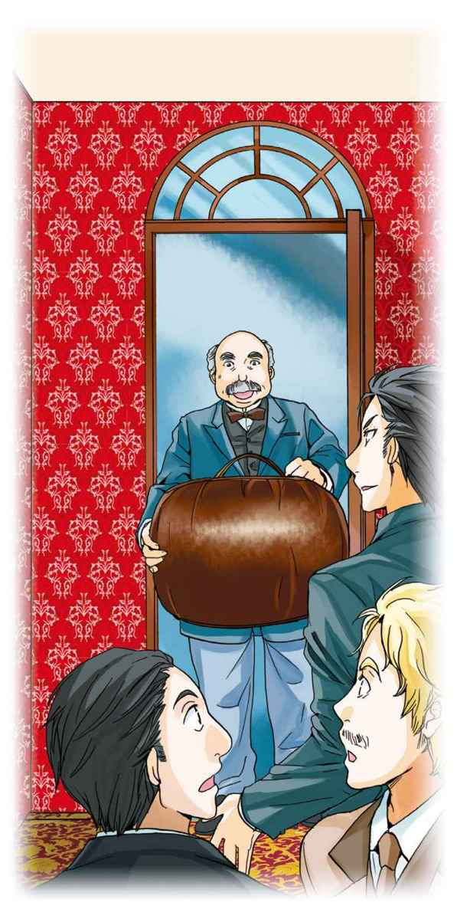
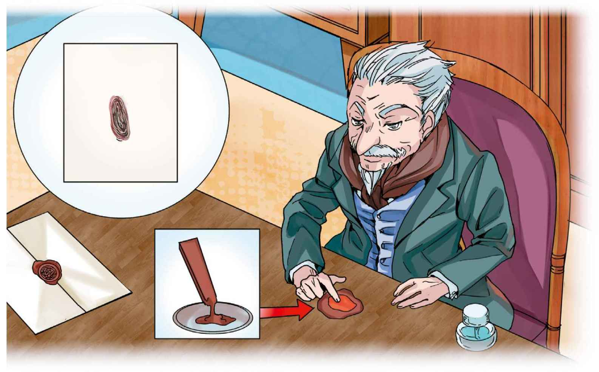

| １０歳までに読みたい世界名作6 名探偵シャーロック・ホームズ | |
| Unknown | |
| (2014) | |
１おびえた女の人
ロンドンのベーカー街二二一番地Ｂにある、シャーロック・ホームズと、ぼく、ワトスンの部屋には、警察では取りあげてもらえない、なやみごとをかかえた人たちが、たずねてきます。
ホームズは、とくいの推理でなぞを解き、みんなを安心させたり、助けたりするのですが、なかには、とてもしんじられないような犯罪が、かくれていることがあります。
ある日の朝たずねてきた、女の人の場合が、そうでした。
「お助けください、ホームズさん。わたし、おそろしくてたまらないのです。姉のように、ある日とつぜん、死んでしまうのではないかと、心配でしようがないのです。」
その女の人は、体をふるわせ、おびえたようすで、いうのでした。
「まあ、落ちついてください」と、ホームズがいいました。
「朝早くに家を出て、二輪馬車に乗って駅まで行き、そこから汽車でロンドンまで来たのだから、きっとおつかれでしょう。」
「まあ、どうしてそんなことが、おわかりなんですか。」
女の人は、びっくりしていいました。ホームズはにっこりして、
「あなたが、はめていた手ぶくろには、鉄道のおうふくきっぷがはさまっていますし、左のそでには、七つもどろのはねたあとがついている。こんなふうによごれるのは、二輪馬車で馬をあやつる人の左にすわったときぐらいです。」
これはホームズのとくいわざで、はじめて会った人でも、仕事は何か、どんなことをしたかを、見ぬいてしまうのです。はじめて見た品物だったら、持ち主がどんな人かをいいあてることもできます。
これは、決して魔法ではなく、じっくりとその人を観察し、頭の中でりくつを組みたてたからこそ、わかったのです。これこそがホームズの「推理」なのです。
女の人は感心するあまり、こわさをわすれたようで、やがてこんな話を始めました。
「わたしは、ヘレン・ストーナーといいまして、ロンドンの南東にあるいなかの村に、父親のロイロット博士と住んでいます。この人は、わたしたちのほんとうの父でなくて、母が再婚した相手なのです。」
「『わたしたち』といいますと、あなたには、きょうだいがおられるのですね。」
「はい、ジュリアというふたごの姉がいましたが、二年前に死んでしまいました。それからは、もうおそろしいことばかりなのです。」
「ストーナーというのが、ほんとうのお父さんの名字なのですね。」
ホームズが、ききました。
「はい、ストーナー少将といって、インドで軍人をしていたのですが、わたしとジュリアが生まれてまもないころ、亡くなりました。そのあと母は、医者をしていたロイロット博士と再婚し、ロンドンに帰ってきたのです。
ところが、その母も八年前に鉄道じこで亡くなってしまいました。母は、たくさんのお金をのこしてくれましたので、姉とわたしは、くらしにこまるようなことは、ありませんでした。」
「そのお金は、ぎりのお父さんであるロイロット博士のものになったのですか。」
「はい、ホームズさん。ただし、わたしとジュリアが結婚したら、そこからお金を分けてもらえるやくそくでした。
そして、ジュリアは二年前にある人と知りあって、結婚することが決まったのですが、その後まもなく、死んでしまったのです。とてもおそろしい死に方でした......。」
２深夜の口笛 
ヘレン・ストーナーの話は、さらにつづきます。
「母が亡くなってから、父のロイロット博士は、わたしとジュリアをつれて、自分のいなかであるストーク・モラン村に引っこしました。ところが、このころから父のようすがおかしくなりました。まわりの人たちと、しょっちゅうけんかをし、警察につかまったりもしました。父は体が大きくて、力も強いので、だれもかなわないのです。
父がらんぼうなので、めしつかいもやめてしまい、父とわたしたち姉妹の三人ぐらしになってしまいました。
父はそのうち、あやしい旅芸人の一座となかよくなったり、インドから取りよせたチーター（＊１）やヒヒ（＊２）を、庭で放しがいにしたりしたものですから、村の人たちは、だれもよりつかなくなりました。
そんなある日、ジュリアにすきな人ができて、結婚することになったのです。姉はとてもうれしそうでしたが、結婚式まであと二週間というとき、おそろしいことが起こったのです......。」
それは、こんな出来事でした。
「屋しきには、三つのしん室があり、父、姉、わたしのじゅんにならんでいます。それぞれの部屋には、ろうかと出入りのできるドアがありますが、しん室どうしの行き来はできません。
姉はその夜、となりの部屋で父がすっているインド葉巻のにおいが、がまんできないといって、わたしの部屋に話をしにきていたのですが、急にへんなことをいいだしたのです。
『ねえ、ヘレン。最近、夜中に、だれかが口笛をふいているのが聞こえるんだけど、あなた知らない？』
『さあ、わたしは、いつもぐっすりねむるから気づかないけれど。そんなことがあったの？』
わたしがききますと、姉は気味が悪そうに、
『夜中の三時ごろになると、口笛が聞こえてくるの。もしかして、あなたも聞いたんじゃないかと思って。』
『さあ、知らないわ。あの旅芸人の人たちかもしれないわね。』
『そうかもしれない。そんなに気にすることもないみたいね。じゃあ、お休みなさい。』
そういって、姉は自分のしん室にもどりました。まもなく、ガチャリとかぎをかける音がしましたが、これは庭にチーターやヒヒがいてこわいので、まどもドアもしっかりしめておくことにしていたからです。
そのあと、わたしは姉の話が気になって、しようがありませんでした。
はげしいあらしの夜でした。風と雨が屋しきをゆさぶり、まどをガタガタたたきます。
これではねむれないな、と思ったときでした。とつぜん、おそろしい悲鳴が聞こえてきたのです。
（姉さんの声だわ！）
わたしはベッドからとびおき、ドアを開けてろうかに出ました。
そのとき、わたしは姉のいっていたような、あやしい口笛を聞いたのです。
なんだろうと思ううち、姉の部屋のかぎがはずれる音がし、ドアが開きはじめました。
ろうかにはランプがおいてあり、その光にてらされて、何かがゆっくりと出てきました。
それは、姉のジュリアでした。
顔は真っ青で、助けをもとめるように両手を前に出し、よろよろと歩いてきます。
わたしは、とっさにだきとめましたが、そのとたん、姉はひざの力がぬけたように、がっくりとたおれてしまいました。
姉の体はピクピクとふるえ、いたみをこらえているようでしたが、やがてわたしに気づくと、おそろしいさけび声を上げたのです。
『ああ、ヘレン！ ひも......まだらのひも（＊３）が！』
あのときの姉の声を、わたしは一生わすれないでしょう。
そのあと、姉は何かいいたそうに、父の部屋を指さしたのですが、すぐに体をふるわせ、動かなくなってしまいました。
それから父のロイロット博士が、自分のしん室からとびだしてきました。村のお医者さんをよんできて、いろいろ手当てをしたのですが、とうとう姉は目ざめることなく、そのまま死んでしまったのです......。」
ヘレン・ストーナーは、きのうの出来事のように、二年前のおそろしい体験を語りおえました。
「なるほど。たいへんおかしな話ですね。お姉さんのような、おかしな亡くなり方をした場合には、検死裁判（自殺か殺されたかなどの見きわめをするイギリスの制度）というものが行われるはずですが、何かわかりましたか。」
しばらくしてから、ホームズがたずねました。
「はい......。あまりおかしな死に方だというので、いろいろ調べてくださったのですが、姉の部屋は、まどもドアも内側からかぎがかかって、だれも出入りができませんでしたし、何より、なぜ死んだかが、わからなかったのです。」
「お姉さんは、ねまきを着ておられましたか。それとも起きているときの服でしたか？」
「ねまきを着ていました。手にはマッチのもえさしを持っておりました。」
「ふーむ。ということは、ねていたときに、何かに気づいて、それをたしかめようとしてマッチをつけたんでしょうね。」
ホームズがいいました。そのあとにつづけて、
「お姉さんは、たしかに『まだらのひも』とさけんだのですね。」
「はい、英語で『スペックルド・バンド』と、はっきりと。」
ヘレンがいったとき、ぼくはふと思いついたことがあって、口をはさみました。
「『バンド』というのは、ひもという意味のほかに、人の集まりを指す言葉だね。ほら、楽隊のことをバンドというだろう。ロイロット博士がなかよくしている旅芸人のことではないかな。かれらはよく、まだらもようのスカーフをまいているし。」
「そうかもしれない、そうでないかもしれない。」
ホームズはぼくに答えたあとで、ヘレンに向かって、
「さて、今までの話は二年前のことでしたよね。なぜ、今になって、ぼくたちのところに相談に来たのですか。それも、そんなにあわてて。」
そうきかれて、ヘレンはまたふるえだしました。
「はい、それは......今になって、わたしの身の回りで、あのときと同じ出来事が、起こりはじめたからなんです。父が急に家の修理をするといいだして、わたしのしん室にあなが開けられました。そこで、しかたなく、姉が使っていたしん室でねむることにしたのですが......そしたら、夜中に聞こえてきたのです。姉のいっていた口笛が、どこからともなく！」
これには、ホームズもぼくも、ハッとしないではいられませんでした。
「わたし、もうこわくてこわくて......それで夜が明けるのを待って、馬車で駅まで行き、そこから汽車でロンドンにやってきたのです。」
それで、かのじょがここへ来たときのようすがわかりました。ホームズがたずねます。
「ヘレンさん、もしかして、あなたは近いうちに結婚されるのではありませんか。」
「はい、前からの知り合いの方から、申しこみを受けて、春には式をあげる予定です。父も、おめでとうといってくれて......。」
「ほんとうにそうですか。」
ホームズが、するどくしつもんしました。
ヘレンは答えませんでしたが、ホームズが、かのじょの手首を見つめているのに気づいて、ぼくはハッとしました。そこには、すごい力でつかまれたらしい青あざがついていたのです。
「父は──ロイロット博士は、とても力が強いので、たまにこんなことがあるのです。」
それきりだまってしまったヘレンを前に、ホームズは少し考えてから、
「どうやら、これはただごとでない事件です。ぼくはなるべく早くあなたの住む村に行って、家を調べたいと思います。あなたはお帰りになったほうがいいですね。ロイロット博士に気づかれないようにしないといけませんが。」
「それでしたら、父もロンドンに用があって来ているので、夜までもどらないはずです。」
ヘレンが答えました。
「では、あとで。ぼくは調べものをしてから行きます。ワトスンくん、きみもいっしょに来てくれるだろうね。」
「もちろんさ。」
ぼくがそう答えたのは、いうまでもありません。
３わしはロイロット博士じゃ
ヘレン・ストーナーが帰ったあとで、ぼくたちは事件について話しあいました。
姉のジュリアは、ほかにだれも入れない部屋で、何を見て「まだらのひも」とさけんだのか。ヘレンの身に何が起ころうとしているのか......。
そんなさなか、とつぜんドアがらんぼうに開かれたかと思うと、
「シャーロック・ホームズというのは、どいつだ！」
どなりながら、戸口につっかえそうな大男が、入ってきました。どうもうな動物のような顔をして、目はギラギラと、にくしみといかりにみちています。
「ぼくがホームズですが、あなたは？」
ホームズが落ちつきはらっていうと、大男はどなりました。
「わしはロイロット博士じゃ。さっきここへ、わしのむすめが来たじゃろう。いったい何を話したか、いえ！」
「さあ、知りませんね。まあ、おかけになったら。」
ホームズが、とぼけた顔で答えます。ロイロット博士はかんかんにおこって、いいます。
「こいつ、ごまかす気だな。」
「そんなつもりは、ありませんがねえ。それにしても今日は寒いですな。」
ホームズは、にこにこと、わらうばかりです。ロイロット博士は真っ赤な顔になると、
「ええい、わしをバカにしおって。いいか、あのヘレンめがここへ来たことはわかっておるのだ。やい、どうしてもはくじょうしないか。」
いきなり、だんろの火かきぼう（＊４）を取りあげると、グイッと曲げてしまいました。
「わしにさからうものは、こうなるのだ。かくごしておけ！」
いいすてると、出ていってしまいました。ホームズは、ロイロット博士がすてていった火かきぼうを拾うと、軽々と元の形にもどしながら、いいました。
「さあ、おもしろくなってきた。このぶんでは、今夜にも何か起こりそうだ。急ごう、ワトスンくん！」
それから、ぼくたちはヘレンとジュリアの母親の遺言（＊５）をたしかめたあと、汽車でロンドンを出発しました。
馬車に乗ってストーク・モラン村に着き、そこでヘレンと会うと、今夜のことをいろいろ打ちあわせました。
ロイロット博士がまだ帰らないうちに、姉のジュリアがなぞの死をとげたしん室を調べたところ、へんなことがわかりました。
まず、まどを外から開けようとしても、ぜったいに無理なこと、次に、ベッドが動かないよう、ゆかにボルトでとめてあり、まくらのあるほうが、かべにぴったりくっついて、動かせないようになっていること。
しかも、それだけではありませんでした。
「見たまえ、あのかべの上のほうに小さなあなが開けてあるが、あれは通風口かな。部屋はかなり古びているのに、あそこだけ新しいから、あとになってつけたものだな。この向こうはロイロット博士のしん室だから、ジュリアさんが亡くなる前に『インド葉巻のにおいががまんできない』といったのは、あそこからもれてきたのだ。」
「そうだね。通風口をつくるなら、外に向けてつくればいいのに、となりから葉巻のけむりが、もれてきたんじゃ、だいなしだ。」
ぼくがいうと、ホームズはうなずいて、
「まったくだ。おや、通風口のすぐそばに、天じょうからロープがぶら下がって、ベッドの近くまでたれているが、なんだろう。ああ、これを引っぱると、めしつかいの部屋のベルが鳴って、よべるようになっているのだな。......おや、へんだぞ。」
「どうしたね」と、ぼく。
「引っぱってもベルが鳴らないどころか、ぜんぜん動かない。そのはずだよ、ロープにくぎを打って引っぱれなくしてあるんだ。」
それらのおかしな点について、ヘレンにきいてみると、
「はい、かべの通風口もベルを鳴らすしかけも、姉のジュリアが死ぬ少し前につけられたものです。めしつかいは、もういなかったので、ベルなんかひつようありませんでした。」
この答えに、ホームズは大きくうなずき、ほほえみました。
「ふむ、役に立たない通風口と、引っぱれないロープか。おもしろい。では、次はロイロット博士の部屋だ。」
４「まだらのひも」があらわれた！
夜になりました。
昼間、打ちあわせたとおり、ヘレンは姉のしん室で休むふりをして、工事中の自分の部屋にこっそりうつりました。
代わって、ホームズとぼくが、かつておそろしい事件が起こった部屋で、ねむらずに番をすることになったのですが、ぼくには気になってしようがないことがありました。
「ねえ、ホームズ。さっきロイロット博士の部屋を調べたら、ずいぶんへんなものが見つかったが、あれはいったいなんだったんだろうね。がんじょうな金庫の上に、見たこともない食べものをのせた皿、それから先っぽが輪になったムチのようなもの──博士は、これらを何に使うつもりだったんだろう。」
「その答えは、もうすぐ出るよ」ホームズは答えました。
「それより、ピストルの用意はしてあるだろうね。」
「もちろんさ。」
ぼくは、きんちょうしながら答えました。
それから、ぼくたちは、真っ暗な中でさらに時間をすごしました。
外からは、ときおりフクロウが鳴くのが聞こえました。一度だけ、ネコのような不気味な声がしたのは、インドから取りよせたチーターが、うなったようでした。
もし、この部屋でジュリアがおそろしい死に方をしたことが、またくりかえされるとしたら、あぶないのはぼくたちの命なのです。
不安な思いで待つうちに、やがて午前三時をつげる教会の鐘の音が、遠くから聞こえてきた──そのときでした。
かべの通風口から、明るい光がさしました。ロイロット博士の部屋で、だれかが明かりをつけたようです。
やがて、光は弱々しくなり、かべの向こうでガサガサと何かをしている気配がしたあと、またしずかになりました。
思いがけないことが起きたのは、そのあとでした。
通風口のあたりから、シャーッ、シャーッと、やかんが湯気をふいているような音が、かすかに聞こえてきました。
次のしゅん間、ホームズが行動に出ました。すばやく立ちあがると、マッチをすり、同時にステッキをふりあげたかと思うと、あの引っぱれないロープ目がけて、何度も何度もたたきつけたのです。

「今のを見たか、ワトスンくん！」
ホームズがいいましたが、ぼくには何がなんだかわかりません。
ただ、くらやみの中で、いきなりつけられたマッチの火に目がくらみそうになったとき、ぼくはたしかに聞いたのです。
なくなったジュリアが、そして妹のヘレンが聞いたという、なぞの口笛を！
となりの部屋から、ギャーッという、世にもおそろしい悲鳴が聞こえたのは、その少しあとでした。
「なんだ、いったい何があったんだ！」
たずねるぼくに、ホームズはいいました。
「すべてが終わったんだよ。とにかく、ロイロット博士のしん室に行ってみよう。」
「こ、これはいったい......。」
ホームズとともに、となりの部屋にかけつけたぼくは、言葉をうしないました。
そこには、あのロイロット博士が目をむき、顔をのけぞらせて、いすにこしかけていました。おかしなことに、ぼくたちが入ってきたのに、身動き一つしないのです。
「し、死んでる......？」
つい医者のくせが出て、ロイロット博士のようすをたしかめようとしたぼくは、もっとおそろしいことに気づきました。
博士の頭には、黄色に茶色のはん点がついた太いひものようなものが、グルリとまきついていました。しかも、そのひもは生きていて、とがった頭をニューッと持ちあげたのです！
「これこそが、『まだらのひも』だよ。」
ホームズが、顔をしかめながらいいました。
「その正体は、インド産の毒ヘビ。ちょっとでもかまれたら、もう助からないおそろしいやつだ。ロイロット博士は、これを使ってジュリアさんを殺し、次にヘレンさんをねらったものの、自分がやられてしまったんだよ。......とにかく、こんな怪物をこのままにはしておけないな。」
ホームズは、この部屋にあった、先が輪になったムチで、ヘビの頭を引っかけると、開けっぱなしになっていた金庫に放りこみ、ガチャンとふたをしめました。
それで、ようやくぼくにもわかったのです。ロイロット博士が、なんのためにこんなへんなムチを持ち、皿に食べものを用意し、金庫を部屋においていたかが......。
５極悪人の最期
ロンドンへもどる汽車の中で、ぼくはいいました。ホームズは深くうなずいて、
「まったくだ、ワトスンくん。そしてロイロット博士ほどの極悪人は、そういるものではない。かれは、ぎりのむすめが結婚すると、お金をゆずらなくてはならないことから、まず姉のジュリアさんを殺した。そして、今度はヘレンさんを同じやり方で亡きものにしようとしたんだ。
ロイロット博士は、インドから、あの毒ヘビを取りよせ、金庫の中にかくしてかっていた。皿の上にあったのは、そのためのえささ。そして、入っていった先にいる人間にかみつくよう、くんれんした。口笛は、ヘビをよびもどすときの合図だった。
むすめが、ねしずまるのを待って、金庫から取りだしたヘビを、通風口から、となりの部屋に送りこむ。ヘビはそのままロープをつたって、その真下にあるベッドへと下りてゆく。そして、そこでねているむすめが少しでも動いたら、ヘビはたちまちおそいかかって、相手を殺してしまう。
あとは口笛をふけば、ヘビはロープから通風口へと、はいのぼってくる。一度でうまくいくとはかぎらないが、いつかはきっとかみつく。ヘレンさんがジュリアさんから聞いた口笛の話は、しっぱいしたときのものだろう。
通風口から、シャーッ、シャーッという音が聞こえてきたとき、ぼくは自分の推理が正しかったことを知った。そこで、ステッキでたたきつけると、びっくりしたヘビはロイロット博士の部屋ににげこみ、そこにいた、かい主にかみついて殺してしまった──というわけさ。」
「なるほどね。いかにも極悪人にふさわしい最期をとげたのだね。」
ぼくがいうと、ホームズは大きくうなずきました。
「そう、『人をおとしいれようとする者は、やがて自分もそのわなにはまる』ということさ！」
（「まだらのひも」おわり）
＊１ チーター...ネコ科の動物。当時はアジアでも見られた。
＊２ ヒヒ...サルのなかまのよび名。
＊３ まだら...ちがった色や、こい色とうすい色がまじりあっていること。
＊４ 火かきぼう...だんろやストーブの手入れをするための金属のぼう。
＊５ 遺言...死ぬ前にいいのこすこと。また、その言葉。
＊６ こんやく者...結婚のやくそくをした相手。
＊７ 奇々怪々...とてもきみょうであやしく、ふしぎなさま。
１ナポレオン像が三つ
人殺しやどろぼうだけが犯罪ではありません。人をだましたり、おどかしたり。なかには、なぜそんなことをするのか、わからない事件さえあります。
その日、ロンドン警視庁のレストレード警部が、シャーロック・ホームズと、ぼく、ワトスンのところに相談にやってきたのも、そうした事件の一つでした。
「とにかく、へんてこな事件が起こったのですよ。あのフランスの英雄、ナポレオンの像をこわしてまわっている人間がいるんです。」
「ただのいたずらじゃないですか？ 悪いことにちがいないけれど。」
ぼくがいうと、レストレード警部は首をふって、いいました。
「わざわざ、よその家におしいって、こわしたりしてもですか。」
「えっ、そんなことが......それはたしかに、いたずらとはいえませんね。」
ぼくが考えこむと、ホームズが急にきょうみを感じたようすで、身をのりだしました。
「なんだかおもしろそうな事件だね。くわしく話してくれないか。」
「わかりました。」
そういって、警部が話しはじめた、世にもふしぎな事件とは──。
「さいしょの事件は四日前、ケニントン通りで絵やちょうこくを売っている店でのことでした。店先でガチャンと音がしたので、店員があわてて行ってみると、ナポレオンの石こう（＊１）像が、こなごなにくだけていたのです。」
「その石こう像というのは、ねうちのあるものだったのですか？」
ぼくは、たずねました。
「いえ、どこにでもあるような安物でした。ですから店員も、かけつけた警官もたいした事件とは思わなかったのですが、そのあと、またへんなことがあったのです。
この店から少しはなれたバーニコット病院に、ゆうべ、どろぼうが入ったのです。ここの院長はナポレオンが大すきで、ナポレオンのことを書いた本や絵などを集めているのですが、さっき話した店から、同じナポレオン像を買っていたのです。そしてぬすまれたのが、まさにそのナポレオン像でした。
よりによって、いちばん安いものを、なぜぬすんだのかと、ふしぎに思いながら外に出てみると、そのナポレオン像がこわされて、地面に転がっているではありませんか。
近くのかべに、ぶつけてこわしたらしいのですが、院長さんにも、かけつけた警官にも、さっぱりわけがわかりませんでした。」
「人の家からぬすんでおいて、それをすぐにこわすなんて、へんなどろぼうだね。」
ぼくが首をかしげると、レストレード警部はうなずいて、
「まだあるんですよ。バーニコット院長は、べつのしんりょう所でも、かん者をみているのですが、ここのまどが、こじあけられていた。
びっくりして中に入ると、ゆかにバラバラになった石こう像がちらばっていました。もともとナポレオン像がおいてあったその場で、落としてこわしたらしいのです。」
「その院長さんは、同じ店でまったく同じナポレオン像を二つも買っていたのかね。」
ホームズがたずねました。
「そうです。よっぽどナポレオンがすきらしいですな。」
「こわされた三つの像は、全部同じ物なのかね？」
「はい、同じ型に石こうを流しこんでつくったものです。そんな安物のために、なんでこんなことをしたのか、どうにもわからないのです。」
警部は、そういって話をしめくくりました。ぼくは首をかしげて、
「うーむ、ナポレオンのフランス軍は、わがイギリスと大戦争をしたから、イギリスには、いまだにナポレオンがきらいな人もいる。そういう思いにこりかたまって、たまたま見かけたナポレオン像をこわさずにはいられなくなったんだろうか。」
「それはちがうよ、ワトスンくん。」
シャーロック・ホームズが、ぴしゃりといいました。
「像をこわすという考えに、とりつかれた人間だとしたら、なぜ同じ店の物ばかり、ねらうんだ。げんに、バーニコット病院では、ほかの物はねらわず、それだけをこわしているじゃないか。この犯人は、ちゃんと考えて行動しているよ。」
「どういうことなんだ、ホームズ？」
「病院の像を外に持ちだしてからこわしたのは、院長さんに音で気づかれてしまうからだ。一方、しんりょう所には、次の日までだれもいないから、気にせず中でこわしたのさ。」
「な、なるほど......。」
ぼくは、うなってしまいました。レストレード警部はハッとして、
「すると、頭のおかしい人間のしわざではなく、何か目的があるというんですね。」
「そのとおりだ。」
ホームズは、うなずきました。
「では、その目的というのは？ そして、犯人は何者なんですか。」
いきおいこむ警部でしたが、ホームズは首をふって、
「それは、まだわからない。ただ、ぼくには、この事件が、これで終わらないような気がするんだ。また何かあったら、すぐ知らせてくれないか。」
「わかりました。」
レストレード警部は答えました。
ホームズはそのとき、何かを予感していたようでしたが、ぼくにはそれが何か、さっぱりわからないのでした......。
２四つ目がこわされ、そして殺人が
──殺人事件発生、ピット街一三一番地マデ来ラレタシ
レストレード警部から、こんな電報がとどいたのは、そのよく朝のことでした。
「ナポレオン像のことで、何か起こったらしいね。行ってみようじゃないか。」
ホームズがいうので、ぼくらはすぐ馬車に乗って出かけました。
「やあ、来ましたね。では、事件が起こった場所を案内しましょう。」
出むかえた警部は、この家に住む老人と引きあわせてくれました。
「わたしはハーカーというものですが、ゆうべ二階で書きものをしていたところ、夜中の三時に下でガタゴトと音がしたのです。
へんだなと思っていると『ギャーッ！』とさけび声がしました。少しして、勇気を出しておりていくと、一階のまどが開いている。
ふと見ると、このあいだ本町通りにある店で買って、だんろの上においたナポレオン像が見えません。あんなものをぬすみに入ったのかと考えながら、外に出ました。
そのとたん、何かにつまずいて、転びそうになりました。びっくりして、明かりを持ってくると、血だらけになった男が、転がっているではありませんか。
むちゅうで警察をよびましたが、なんでこんなことになったのか、気味が悪くて......。」
「なるほど、ハーカーさん。だいたいわかりました。」
ホームズはそういうと、今度はレストレード警部に向かって、
「殺された男について、くわしいことは、わかったのかね。」
「いえ......それがさっぱり。がっちりした体の、三十歳ぐらいの男で、ポケットには、りんご一こと、お金が少し、ロンドンの地図、それと、この写真一まいが入っていただけでした。」

警部が見せてくれた写真には、まゆが太くてサルににた、けわしい顔の男が写っていました。
ホームズはそれを見て、部屋のあちこちを観察しました。
「ここのまどは、高い場所にあるから、しのびこんだのは、よほどすばしっこいやつだ。──で、ナポレオン像は見つかったのかい。」
「ついさっき、この近くでこわされていたと知らせがありました。」
そういう警部につれられて、ぼくたちは二、三百メートルはなれた、だれも住んでいない家の前まで行きました。
そこの庭には、石こうのかたまりがちらばっていて、ぼくたちははじめて、話に出てきたナポレオン像を見ることができました。
「どうです、何かわかりましたか。」
警部が、ホームズの後ろから、たずねました。
「そうきくのは早いよ。ただ、きょうみ深いのは、なぜ、これをすぐにこわさずに、わざわざここまで持ってきたかだ。あんなものをかかえて歩いたら、人に見られるかもしれないじゃないか。」
「ここが空き家だからだろう。音を聞かれなくてすむし、庭なら通行人に見られないし。」
ぼくは、ホームズの推理を思いだしながら、いいました。
「いや、とちゅうにも空き家はあったから、それだけではない。上をごらんよ。」
ホームズの指さす先を見ると、そこには外灯がありました。
「なるほど、ここなら夜中でも明るいからか。と、いうことは......。」
ぼくがいうと、ホームズは答えました。
「犯人は、像をこわして中を調べたかった。そのために明かりがひつようだったのさ。」
「なるほど！ そういえば、バーニコット病院の像の近くにも、ランプがありました。」
レストレード警部は、感心していいました。それにつづけて、
「さあ、いよいよ捜査開始だ。ナポレオン像はともかく、人が殺されたんですからな。警察としては、殺された男の身元（＊２）をわりだし、かかわりのある人間をさぐるつもりですが、あなたがたは？」
「警察とはべつのやり方で調べてみようと思う。あとで話しあおう。それと、死んだ男が持っていた写真をかしてくれないか。」
ホームズは、そういって警部とわかれると、歩きだしました。
「とんでもないことになったね。きみのことだから、もう見当は、ついたんじゃないかい。」
ぼくがたずねると、ホームズは首をふりました。
「いや、まだまださ。はっきりしたのは、あんな安物の石こう像に、命をかけるだけのねうちがあったことだ。どんなひみつが、ナポレオン像にあったのか。殺された男が像をこわした犯人でないとすると、事件はこのあとも起こるよ。」
ホームズの言葉に、ぼくはハッとしないではいられませんでした。
３ナポレオン像は全部で六つ
そのあとぼくらは、ハーカー氏にナポレオン像を売った、本町通りの美術品店をたずね、ハーカー氏のほかに二人が同じ像を買っていったと教えられました。
「チジック町のブラウン氏と、レディング市のサンドフォード氏──それで全部ですね。この店のナポレオン像は、どこから買ったのですか？」
ホームズのしつもんに、美術品店の主人は答えました。
「ステップニー町のゲルダー工場です。そこの工場でつくって、あちこちの店に売っているんですよ。」
「なるほどね。ところで、この写真の男に、見おぼえはありますか。」
ホームズがさしだした写真を、店の主人は見ていましたが、
「いや、知りませんね。」
と首をふりました。
次に、ぼくたちは、一つ目の像がこわされたケニントン通りの店に向かいました。
そこの主人は、ぼくたちのしつもんに気軽に答えてくれました。
「はい、バーニコット院長が買ったナポレオン像は、うちの店の品です。うちで買った三つが、全部こわされたことになります。まったく、けしからんやつがいるものですよ。それらの像は、どこから買ったかって？ ゲルダー工場ですよ。」
それは、さっききいたのと同じ工場でした。ここでも男の写真を見せると、
「あれっ、これはうちではたらいていたベッポですよ！ イタリア人の職人で、ふらりとこの町にあらわれて、うちではたらいていたんですが、また、すがたを消してしまいましてね。」
「かれがいなくなったのは、いつのことですか。」
ホームズがききました。
「ナポレオン像がこわされる二日前だったと思います。」
「なるほどね。どうもご協力ありがとう。──さあ、ワトスンくん、次はゲルダー工場だ。ここでつくられた六つの像は、二つの店に三つずつ送られ、そこからバラバラに売られていったんだ。その大もとに行けば、きっと手がかりがつかめるはずだよ。」
ホームズはそういって、ぼくのかたをたたいたのでした。
ロンドンから少しはなれた、ステップニー町にあるゲルダー工場。
そこは、ちょうこく品の製造工場で、職人たちが石こうを型にはめたり、けずったりしてはたらいていました。
工場の支配人は、すぐにノートを調べてくれて、
「はい、うちでつくったナポレオン像を、二けんの店に三つずつ売りました。」
それから男の写真を見せたとたん、こわい顔になったのには、おどろきました。
「やっ、こいつは......ええ、知っていますとも。これはベッポといって、うちの工場ではたらいていたんですが、一年ちょっと前、ナイフで人をさしたんです。そのあと、この工場ににげこんだものですから大さわぎでしたよ。」

「ほう、工場にね。そのあとどうなりました？」
ホームズが、支配人にたずねます。
「すぐ警察につれていかれ、相手が死ななかったので、一年間の刑務所送りとなりました。あとのことは知りませんが、ベッポのいとこが工場ではたらいているので、きいてみましょうか。」
ぼくは、それは都合がいいと思いましたが、ホームズはきっぱりと、
「必要ありません。われわれが来たこともいわないでください。」
そうことわると、ゲルダー工場をあとにしたのでした......。
ぼくたちがベーカー街の部屋にもどると、レストレード警部がすでに来ていました。
「おそいですよ、今まで何をしていたんですか。」
「ナポレオン像のことを調べていたんだよ。おかげで、同じナポレオン像が六つあり、それがどこでつくられ、のこりがどこにあるかまでわかった。」

ホームズが答えると、警部はそれどころではないというふうに、
「ほう。それはご苦労さまでしたが、われわれは、ついに殺された男の身元をつきとめましたよ。」
「それは、すごい。で、何者だったね。」
ホームズがほめると、警部はじまんげにいいました。
「ピエトロといって、イタリア人の住む地区で悪いことをしてきた男です。金さえもらえば、人殺しも平気でやるやつですよ。これではっきりしました。」
「というと？」
ぼくには、何がはっきりしたのか、わかりませんでした。
「決まっているじゃありませんか。ピエトロは、写真の男を殺すようにたのまれ、追いかけていたんですよ。たぶん写真の男もイタリア人で、仲間をうらぎったりしたんでしょう。で、とうとう見つけたところ、男はハーカー氏の家にしのびこんでいった。ピエトロはあとからついていって、おそいかかったんですが、写真の男のほうが強くて、やられてしまった──。こんなところですよ。」
警部が話しおえると、ホームズははく手しながら、
「お見事、お見事。でも、それだと、写真の男がハーカー氏の家にしのびこんだことと、ナポレオン像がこわされたことの説明がつかないじゃないか。」
「またその話ですか。細かいことは、写真の男をつかまえれば、わかりますよ。これからイタリア人地区に警官たちを送って、ピエトロ殺しの犯人をつかまえに行くところです。よかったらホームズさんたちも、つれていってあげますよ。」
警部は、おんきせがましく（＊３）いいました。しかし、ホームズは、
「いや、えんりょしておくよ。それより、ぼくらにつきあわないかい。イタリア人地区のそうさくよりは、ずっと楽で時間もかからない。犯人をつかまえられる割合は──半分かな。」
「うむむ」警部は考えこみました。「いいでしょう。で、いつ、どこへ行くんです。」
「こんばんおそく、チジック町へだよ。」
チジックは、ロンドンの西にある町です。本町通りの店で像を買った三人のうち、一人がそこに住んでいることを、ぼくは思いだしました。
「なんでまた、そんなところに？」
レストレード警部がききました。
「のこる二つのナポレオン像のある町のうち、レディングよりチジックのほうが近いからだよ。われわれにとっても犯人にとってもね。」
４のこるは二つ──やみの中の待ちぶせ
ぼくたち三人が、馬車でチジックに向かったのは、午後十一時でした。着いたときには町の人はねており、あたりはしーんとしていました。
ぼくたちは、本町通りでナポレオン像を買った、ブラウン氏の家の前で、はりこみを始めました。げんかんの小まどに、弱々しい明かりがついているほかは、真っ暗です。
ぼくはピストルをポケットに入れていましたし、ホームズは乗馬用のムチに、なまりを流しこんだ武器を持っていました。
これまでは、四つのナポレオン像をこわした犯人のあとを、追いかけているだけでした。
でも、今は犯人がすぐそばにいるかもしれません。まわりには身を守るものは、何もないのです。
ドキドキしながら、見はりをつづけて、どれくらい時間がすぎたでしょう。
ふいに真っ黒いかげが、やみの中をかけぬけました。かげはブラウン家の庭に入りこむと、足音も立てずに建物に近づきました。
いっしゅん、げんかんからもれる光にてらされて、一人の男のすがたが、うかびあがりましたが、それもすぐ暗がりに、とけてしまいました。
それからしばらくして、ギシギシとかすかな音が聞こえてきました。
（まどを、こじあけているんだな。）
そう考えていると、まどの一つがぼうっと明るくなりました。だれかが家の中に入って、手さげランプをつけたようです。
しばらくして、ランプの光はべつの部屋に移動しました。どうやら、中で何かをさがしているが、なかなか見つからないようすです。
「まどから出てきたところを、つかまえましょう。」
警部がいったとき、男がすがたをあらわしました。何か白いものを、かかえています。
男はまわりを見回したあと、ぼくらにせなかを向けました。そのすきに、ぼくたちは草むらをそっと歩いて、男に近づきました。
ぼくたちが見ているとも知らず、男は白いものを持ちあげると、地面にたたきつけました。
ガチャン！ と音がしたそのとき、ホームズが男にとびかかりました。すかさず、レストレード警部とぼくが、左右のうでをおさえ、警部が手じょうをかけました。
男は、けもののようにうなりましたが、もう、にがしはしません。
ホームズは、いつのまにか男からはなれ、地面にちらばったナポレオン像を調べています。
そこへ、げんかんのドアが開いて、太った男の人が出てきました。この家の主人、ブラウン氏です。
「ホームズさんですね。あなたから急ぎの知らせをいただいたとおり、部屋にかぎをかけ、とじこもっていたのですが、その男はいったい......？」
家の明かりがもれて、つかまえられた男をてらしだしました。そのサルのような顔は、あの写真とそっくり同じでした。
「イタリア人の職人、ベッポですよ。六つのナポレオン像を追いかけ、殺人までおかした男──警部、ぼくのいうとおりにしてよかったろう？」
５最後のナポレオン像
よく日、ベーカー街にやってきたレストレード警部は、ピエトロ殺しの犯人たいほをよろこびながら、どうしても気になることがあるようでした。
「あのベッポですが、なぜナポレオン像をこわしたか、はくじょうしないんですよ。で、ホームズさんの意見をうかがいたくてね。」
それは、ぼくもわからなかったので、警部といっしょにホームズの答えを待ちました。
「それについては、もうすぐここに来るお客が教えてくれるよ。」
「お客が？」
「そうだよ、ワトスンくん。......そら、よびりんが鳴ったよ。事件の解決のお出ましだ。」
やがて、ひげを生やした男の人が、大きなかばんをさげて入ってきました。

「シャーロック・ホームズさんのおたくは、こちらでしょうか。」
「そうです。あなたはレディング市にお住まいのサンドフォードさんですね。」
ホームズがたずねると、男の人はカバンを開きながら、
「はい......あなたからいただいた手紙では、わしが本町通りの美術品店で買ったナポレオンの石こう像を、十ポンド（＊４）でゆずってほしいとのことでしたが、ほんとうですか。」
「もちろん、ほんとうですとも。」
ホームズは、にこやかにいいました。
「わしが買ったときより、その十何倍にもなりますが、よろしいので？」
「もちろんです。では、受けとりのサインを。はい、ありがとう。」
サンドフォード氏が、十ポンド札を受けとって帰ったあと、ホームズは買ったばかりのナポレオン像を、テーブルにおきました。
おどろいたことに、ホームズは、ベッポをとらえるとき持っていったムチを取りだし、像を目がけて、ふりおろしたのです。
あっというまに、像はこなごなにくだけちりました。そのかけらを、ゆうべと同じように調べていたホームズは、よろこびの声を上げました。
見ると、ホームズは何か黒くて丸いものを指でつまんでいます。そして、こんなおどろくべきことをいったのです──。
「とうとう見つけたぞ。これこそは、かの有名な『ボルジアの黒真珠』だよ！」
ボルジアの黒真珠──それは、ある国の王様がロンドンに来たとき、おきさきのしん室から消えた秘宝で、たいへんなさわぎになったものでした。
だが、それがどうして、この六つ目のナポレオン像の中に──？
おどろくぼくと警部にホームズがした話というのは、こうでした。
「あの事件では、おきさきに仕えていたメイドがぬすんだとうたがわれたが、何もしょうこが出なかった。じつは、このメイドの兄が、殺されたピエトロという男で、ベッポは仲間だった。
ベッポは、ピエトロが妹にぬすませた黒真珠をあずかって、横取りしたのだ。ところが、ベッポはつまらないことから人をさしてしまい、警察に追われるはめになってしまった。つかまって、身体けんさを受ければ、かくしておいた黒真珠が見つけられてしまう。
むちゅうで工場ににげこんだところ、そこではナポレオン像を六つ、かわかすためにおいてあった。ベッポはとっさに、まだやわらかい石こう像の中に黒真珠をうめこんだんだ。
だが、そのあと刑務所に入っていた間に、ナポレオン像はどこかに売られていってしまった。
幸い、ゲルダー工場にはベッポのいとこがはたらいていたから、調べさせて、どこの店に売ったかをつきとめた。一けん目のケニントン通りの店には職人として入り、三つの像をこわして調べたが、このどれもが空っぽだった。
本町通りの店では、やとい人から聞きだすなどして、三人の客の名と住所がわかった。で、いちばん近いハーカー氏の家にしのびこんだまではよかったが......。」
「自分を追っていたピエトロと出くわし、あらそったあげく殺してしまった、と。」
ぼくがいうと、ホームズはうなずいて、
「そのとおりだ。もし、この四つ目の像に黒真珠が入っていたなら、今ごろそれを持ってにげてしまっているだろうから、つかまえようがない。われわれとしては、四つ目の像に黒真珠が入っていなかったことを、ねがうしかなかった。問題は、チジック町とレディング町のどちらに、ベッポが来るかだったが......。」
「そりゃ六十キロも遠くにあるレディングより、同じロンドンのチジックに行くに決まっていますよね。なるほど！ いやはや、今回はひときわすばらしい推理でしたな！ ロンドン警視庁は、あなたのような友人がいることに、かんしゃしなくてはいけませんよ。」
レストレード警部が、感心しきっていいました。負けん気（＊５）の強いかれが、ここまでホームズをほめるのは、めずらしいことでした。

「それは......どうも、ありがとう。」
ホームズもまた、めずらしいことに、てれわらいをうかべていましたが、すぐにいつものれいせいな表情にもどると、ぼくにいったのでした。
「黒真珠を金庫にしまってくれないか。──ああ、警部、また、やっかいな事件につきあたったら、えんりょなく相談に来たまえよ。解決へのヒントの一つや二つは、さしあげられるだろうから。」
（「六つのナポレオン」おわり）
＊１ 石こう...白い色をした鉱物。セメントやチョークの原料にするほか、美術品などにも使う。
＊２ 身元...その人の生まれや育ち、親やきょうだいのことなど。
＊３ おんきせがましく...無理に、ありがたがらせようとするようす。
＊４ ポンド...イギリスで使われていたお金の単位。
＊５ 負けん気...負けたくないと思う気持ち。
１殺人犯にされる！
「助けてください、ホームズさん。このままでは、ぼくは殺人犯にされてしまいます！」
そういいながら、かみの毛をふりみだし、目を血走らせた青年がかけこんできたときには、さすがのシャーロック・ホームズもおどろき、あきれたようでした。
名探偵の知恵をかりようと、ここベーカー街二二一番地Ｂをたずねる人は、あとをたちません。でも、これほどのいきおいで、やってきた人は、見たことがありませんでした。
その青年は、あきれて見つめるホームズとぼくに気づくと、少し落ちついたようすで、
「すみません。いきなりで、びっくりされたと思います。ぼくの名は......。」
「きみの名は、ジョン・マクファーレンではありませんか。」
ホームズがいきなり、聞いたこともない名前を口にしたので、ぼくもびっくりしましたが、青年のおどろきはそれ以上でした。
「ど、ど、どうしてそれを......。」
「いやなに、ちょっとした推理ですよ。」
ホームズは、ひざの上にのせていた新聞をさしだしながら、
「きみは、この記事の事件にまきこまれたのではないですか。」
わきから見ると、そこには、こんな見出しがおどっていました。
ノーウッドでけんちく業者、殺害か
材木おき場から黒こげ死体発見
「そ、そ、そうです。」
青年は、ふるえ声で答えました。
ぼくはその新聞を受けとると、さっそく読みはじめました。
午前零時、ノーウッドのジョナス・オールデイカー氏の家のうらにある材木おき場から出火。消防ポンプが出て消しとめたが、やけた材木の下から黒こげの骨と、灰になりかけた衣服が発見された。
そのあと、警察が出動。オールデイカー氏のすがたが見えないことから調べたところ、氏のしん室にあらそったあとを発見した。
金庫が開けられて書類がちらばっていたほか、血のついたステッキがのこされていた。ゆかには何かを引きずったあとがついており、開けっぱなしの戸から材木おき場のほうにつづいていた。
オールデイカー氏は、きのうの夜、わかい男の客をむかえており、出むかえた家政婦の話では、ステッキはこの男の持ちものだったという。
警察では、このわかい男がオールデイカー氏を殺害、しょうこを消すために、死体をもやしたうたがいがあるとして調べている。
そのあとに、「続報」として、こんな記事がありました。
オールデイカー氏殺害のようぎ者と見られる客は、ロンドン市内の法律事務所につとめるジョン・マクファーレンとわかった。マクファーレンは自分のステッキで、オールデイカー氏をなぐり殺したあと、死体を材木おき場に運び、火をつけたものとみられている。
捜査にはロンドン警視庁のレストレード警部があたり、マクファーレンのたいほに全力をあげている。
新聞記事から顔を上げると、ぼくはホームズにいいました。
「なるほど。だが、ロンドンでは毎日いろんな事件が起こっているのに、どうしてすぐに、この記事の人とわかったんだ？」
「かんたんなことさ。この青年のポケットから見えている書類は裁判所のものだし、まじめな事務所につとめていそうな服なのに、しわがよって少しよごれていて、ゆうべは家でなく宿屋にとまったことがわかる。
つまり、出先でおそくなって帰れなかったのではないか。オールデイカー氏の家をたずねたよく朝、汽車でロンドンにもどるとちゅう、新聞で殺人事件を知って、ここへかけこんだ。そのおかげで、警察にたいほされずにすんだと考えると、当てはまる事件はそんなにはない。
何より、きみはそういうちゃんとした身なりの人なら、かならず持っているはずのステッキを、手にしていないじゃないか。たぶん、それが、この記事にある『血のついたステッキ』だ。ちがいますか、マクファーレンくん。」
ぼくはホームズの推理に感心するばかりでしたが、青年は、ぼうぜんとしていました。
「そのとおりです。ぼくはジョン・マクファーレン......でも、犯人じゃないんです。
ああ、もう時間がない......。ベーカー街に来るとちゅう、だれかにつけられているのに気づきました。もうすぐ警察が来て、ぼくはたいほされるでしょう。その前に、ホームズさんと話をしたかったんです。ぼくが無実であり、それをしょう明（＊１）してほしいということを！」
マクファーレン青年は、必死にいうのでした。
「よろしい。できるかぎり、これまでのことを話してくれたまえ。」
シャーロック・ホームズはうなずきました。
「わかりました。ありがとうございます！」
青年の声は、よろこびと不安が入りまじったものでした。
２きみをたいほする！
「ぼくが、ジョナス・オールデイカーさんと会ったのは、きのうがはじめてです。小がらで、かみの毛もまゆも白く、なんとなくイタチみたいでした。ぼくがつとめている法律事務所にいきなりやってきて、
『このメモをもとに、わたしの遺言状の書類を作ってほしい。』
と、このメモをわたされたのです。
書類を作りはじめて、びっくりしました。それは、自分が死んだら、ジョン・マクファーレン、つまりぼくに全財産をゆずるというものだったからです。
オールデイカーさんは、ぼくの母の古い知り合いらしく、名前は聞いたことがありますが、それだけです。なのに財産をくれるなんてどうしてなんでしょう。オールデイカーさんは、
『きみのことは聞いている。とてもまじめで、見こみのある青年だそうだね。わしは、つまも子もいないし、死ねばお金の行き場がなくなる。ならば、きみにあげようと考えたのさ。』
というのです。
書類ができあがると、他人に開けられないように、封ろう（＊２）をしたのですが、そのあとオールデイカーさんはいいました。
『そうだ。まとめたい書類もあるし、今夜、ノーウッドのわしの家に来て食事をしませんか。』
全財産をくれるというのですから、ことわる理由はありません。で、夜になってから汽車でノーウッドまで出かけたのです。
オールデイカーさんの家に着いたのは、午後九時半ごろでした。
中年のむっつりした家政婦の案内で中に入り、食事をしたあと、オールデイカーさんの部屋に行き、そこにある金庫を開けて、書類を整理したんです。
仕事を終えて帰りかけたとき、持ってきたステッキがないのに気づきました。こまっていると、オールデイカーさんが、
『これから、ちょくちょく来てもらうことになるから、そのときまでにさがしておくよ。今日は帰りなさい。』
といいました。しかたなく、げんかんのほうに行きかけると、
『家政婦はもうねているから、起こしたらかわいそうだ。材木おき場から外に出なさい。』
というので、そこを通って帰ったのですが......今朝になってみたら、その新聞に書いてあるようなことになっていたんです。
ホームズさん、今、お話ししたことがすべてです。ぼくはオールデイカーさんを殺してなんかいません。助けてください！」
マクファーレン青年は、ホームズにたのみこみました。
「──わかりました。」
われらが名探偵が、力強くうなずいた、そのときです。
バタン！ ドアがあらあらしく開いて、ドヤドヤと入ってきたのは、ロンドン警視庁のレストレード警部と、部下の警官たちでした。
警部はホームズとぼくに軽く礼をすると、青年に向かって、
「ジョン・マクファーレンだね。ノーウッドのジョナス・オールデイカー氏を殺したうたがいで、きみをたいほする！」
とたんに青年は真っ青になり、ぼくも、たいへんなことになったと思いました。
ホームズだけは、落ちつきはらって、笑顔さえ見せながら、
「ほう、殺人ようぎですか。その理由は？」
「決まっているでしょう。昨夜オールデイカー氏の家をたずねたのはマクファーレンだけ。現場にのこされていた血のついたステッキは、かれのもの。しかもオールデイカー氏は、死んだらかれに財産をゆずるやくそくをしていた。動機も十分じゃありませんか。」
警部はいらいらしながらいいました。ホームズは感心したように、
「そこまで調べがついていたのか。さすがだ。だが、へんじゃないかな。」
「何がへんなんです。」
ふしんそうな警部に、ホームズは青年が持ってきたメモを見せました。
「見たまえ。これは、オールデイカーがマクファーレンくんにわたした遺言状のメモだが、最初と最後の何行かと、真ん中あたりは、ていねいな字で書いてあるが、そのほかはひどくて、ほとんど読めないところもある。なぜだか、わかるかね。」
ぼくものぞいてみましたが、たしかにそのとおりでした。
「ホームズさんの悪いくせだ。もったいぶらずに、教えてくれたらいいでしょう。」
警部はふきげんそうに、いいました。ホームズは答えました。
「汽車の中で書いたからだよ。走りだす前と、止まったときに書いたところはきちんとしているが、走っている最中は、列車がゆれるため、こんなふうにみだれてしまう。ちなみに、ノーウッド駅からロンドンブリッジ駅へ向かう急行には、とちゅう一度だけ、停車する汽車がある。オールデイカーは、それに乗ってきたんだね。」
「それなら、なんのふしぎもないじゃありませんか。」
「とんでもない。遺言状の下書きなんて大事なものを、汽車の中でささっと書く人間なんかあるものか。」
「いや、それは......。」
レストレード警部は、言葉につまりましたが、すぐに大声で、
「だからといって、殺してないことにはならないでしょう。どうしても、そう思われるんなら、べつの犯人を見つけてつれてきてくださいよ。さ、マクファーレン、来るんだ！」
こうして、マクファーレン青年は、無実をうったえながら警察につれていかれました。
３つかみどころのない事件
ホームズとぼくは、今までいろいろな犯罪に立ちむかってきましたが、その多くには、どこかにかわったところがありました。
おそろしかったり、なぞめいていたり、わけがわからなかったり。でも、そこに、解決へのきっかけがひそんでいたものでした。
今度の事件は、そこが少しちがいました。なんというか、つかみどころがないのです。
一人の老人が、昔の知り合いのむすこに全財産をゆずることにした。変わった話ではありますが、ありえなくはありません。
そのわか者は、すぐお金がほしくなったのか、けんかになったのか、ステッキでその老人をなぐってしまい、こわくなって死体をやいてにげた──いろいろなしょうこが、そう物語っています。
もし、マクファーレンのほかに犯人がいるとしたら、それは、たまたま近くを通りかかり、しん室をのぞいた悪人が、金をうばおうとおそいかかった、というぐらいしか考えられません。
もちろん、そんな話で警察がなっとくするわけがありません。
それでもホームズはあちこちをとびまわり、手がかりをつかもうとしました。
そして、くたくたになって帰ってきてこういいました。
「マクファーレンくんの両親に会って話を聞いたんだが、オールデイカーはとてもケチなやつで、財産をくれるわけがないというんだ。とりわけ、母親はあの男が大きらいで、
『あの男は、わかいころわたしに結婚を申しこんだのですが、ことわりました。あんなずるがしこくてざんこくな男と、だれがいっしょになるものですか。ことわられたとなったら、わたしの写真をズタズタにきずつけて、送りつけてきたりしたんですよ。』
というんだ。ろくでもない男であることがわかったよ。
そのあとオールデイカーの家に行って、ゆかやかべをはうようにして調べたんだが、手がかりはなし。家政婦にも話を聞いたが、
『あの夜、だんなさまのところに来たのは、あのわか者一人です。あたしはお食事を出したあとねて、火事さわぎまで起きなかったので、何があったかはぞんじません。』
というばかりで、こちらも空ぶり。レストレード警部がいなくてよかったよ。いたら、ぼくをからかったことだろうねえ。」
「それは、たいへんだったね。」
くやしさがつたわってくるようで、ぼくはいいました。
「まあ、しようがないよ。ただ、一つだけおかしなことがわかった。オールデイカーは、この一年ほど、コーネリアスという人物にお金を何度もふりこんでいるんだ。オールデイカーは、ここのところ仕事をしていなかったので、お金をはらう商売相手が、いるとは思えないのに。
......ああ、だからといって、それがマクファーレンくんの無実を明かすとも思えないし、さて、今度ばかりはむずかしいなあ。」
ホームズがめずらしく、弱音をはいた、そのよく朝のことです。
ホームズは、ひとばん中、ねないで考えていたらしく、げっそりやつれていました。
でも、青年をすくう手だては見つからなかったようで、気のどくで声がかけられませんでした。
よりによって、そこへ、レストレード警部から電報がきました。
──マクファーレン有罪ノ新事実発見。本件カラ手ヲ引カレヨ
４血ぞめの指紋
電報を見たぼくは、びっくりしてしまいましたが、ホームズは、かえって気持ちをかきたてられたようでした。
ノーウッドにかけつけると、レストレード警部が待っていて、
「やはり、来ましたね。」
と、にやりとわらいました。
「いったい何が発見されたというんです。」
ぼくがたずねると、警部は勝ちほこったようすで、
「あなたがたは、どうしてもマクファーレンを犯人にしたくないらしいが、だれがオールデイカー氏を殺したのかは、わかりましたか。」
「いや、まだだ。」
ホームズは、くやしそうにいいました。
「ハハハ、そうですか。じつは、われわれ警察は、決定的しょうこをつかんでしまいましてねえ。よければ、お目にかけますが。」
「ぜひ、おねがいしたいね。」
「では、こちらへどうぞ。」
レストレード警部がつれていったのは、げんかんのホールでした。
ぼくがハッとしたことに、そこのかべには血がついており、よく見ると指のあとのように見えました。警部がいうには、
「最近、指紋というものが犯人をつかまえる手だてとして発見され、わがイギリス警察でもさっそく、取りいれていることは、ごぞんじかと思いますが、今度もそれが役に立ちました。」
ホームズは、愛用の大きな虫めがねで、観察しながら、
「なるほど、たしかにこれは指紋だ。親指のようだね。」
「これがマクファーレンの親指から取った指紋なんですが......くらべてごらんなさい。」
ホームズは、警部がさしだしたマクファーレン青年の指紋を、虫めがねで見つめ、さらにかべの血のあととくらべていましたが、
「なるほど、この二つはまったく同じものだね。」
と、みとめました。レストレード警部は、いやにうれしそうに、
「そうでしょうとも。同じ指紋は百万に一つもない。どうです、『決定的しょうこ』といったわけが、おわかりでしょう。」
「なるほど、こりゃたしかに決定的だ......。」
ぼくが思わずいうと、ホームズも、
「決定的だねえ。」
なぜか、さっきとはちがう、ほがらかな声でくりかえしました。
「この指紋は、いつ、だれが見つけたのかね。」
「ここの家政婦ですよ。ゆうべ見回りの警官に知らせてきたんです。」
「ふーん、警察ばかりか、ぼくさえ見つけられなかったものをねえ。」
「負けおしみをいってもだめですよ。あきらめてベーカー街におもどりなさい。では。」
レストレード警部は、じょうきげんで行ってしまいました。
しかし、ふとホームズを見ると、目をかがやかせ、こんなたのもしいことをいうのでした。
「おもしろくなってきた。ぼくらに勝ち目はあるよ、ワトスンくん。」
それからホームズは、家のろうかの歩数を測ったり、かべの指紋を調べたりしました。
やがて何かをつかんだらしく、ほほえむと、この家の一室でせっせと書きものをしているレストレード警部のもとへ行ったのです。
「ずいぶん熱心に、何を書いているんだい？」
ホームズが声をかけると、警部はむっとした顔を上げて、
「ほうこく書ですよ。マクファーレンが犯人だという決定的しょうこについてのね。」
「それを、ていしゅつするのは、まだ早いんじゃないかな。」
「どうしてですか。」
警部は、ホームズの実力を知るだけに、不安になったようでした。
「この事件で、もっとも大事なことを知っている人に、きみは会っていないからね。」
「ふん、そんな人がいるわけが......まさか、時間かせぎじゃないでしょうな。」
警部は、うたがわしそうにいいました。ホームズはわらって、
「もちろんさ、つれてこいというなら、いつでもつれてこられるよ。」
「いいですよ、会いましょう。ここにつれてきてください。」
「わかった。ただ、ちょっと用意してほしいものがあるんだ。」
「なんですか。用意できるものなら、すぐにそろえますよ。」
「それはありがたい。では、まず警官が何人か。体かくがよくて、声の大きいのがいいね。」
「警官なら、三人います。今、よんできましょう。」
「あと、麦わらのたばとバケツに水を二はい持ってきてくれたまえ。」
ホームズは、ますますみょうなことをいいだします。
「ホームズさん、からかうのもいいかげんにしてくださいよ！」
とうとうおこりだした警部を、ぼくはしかたなくなだめました。
「あれほどいうんだし、ホームズのたのみをきいてやってくださいよ。」
こうして、見たことも聞いたこともない捜査が始まりました。
５わらとバケツと警官と
それからまもなく、三人の警官と、わらたばと、水の入ったバケツ二つがそろいました。場所は、二階のろうかです。
ホームズは、満足そうにそれらをながめると、いいました。
「わらたばは、そこのゆかにおいてと。ではワトスンくん、わらに火をつけてくれたまえ。」
「ちょっと、ホームズさん！」
あわてる警部をしりめに、ぼくはマッチで火をつけました。
わらはたちまちパチパチともえあがり、けむりがろうか中に広がりました。
そこで、ホームズは三人の警官にいいました。
「さあ、しょくんの出番だ。みんなでいっせいに『火事だ！』と、さけんでほしいんだ。それ、一、二の三！」
「火事だ！」
「さあ、ワトスンくんも警部もいっしょに、もう一度。」
「火事だあっ!!」
「も一つおまけに、はいっ。」
「火事だああっ」
ノーウッド中に聞こえそうな大声で、ぼくらはさけびました。
そのときでした。しんじられないようなことが、起こったのは。
ろうかのはしの、ただのかべだと思っていた場所が、ポッカリ開いたかと思うと、そのあなから人間がとびだしてきたのです！
「助けてくれえっ。」
そうさけんだのは、しらが頭に白いまゆ、どこかイタチににた、小がらな老人でした。
老人もびっくりしていましたが、とりわけレストレード警部のおどろきは、なみではありませんでした。
そんななか、シャーロック・ホームズだけは落ちつきはらって、
「うむ、成功だ。みんな、バケツの水をかけて。ほんとうに火事になってしまうよ。
大事なことを知っている人というのは、かれのことさ。死んだはずのジョナス・オールデイカー──実は、すべての悪だくみの犯人！」
「何してる、さっさとやつをつかまえないか！」
レストレード警部が、警官たちに命じる声がひびきました。
６とんでもない結末
「あきれたもんですな。オールデイカーのやつ、いくら家を建てるのが仕事とはいえ、あんなかくし部屋をつくっていたとは。でも、どうしてわかったんです？」
オールデイカーがつれていかれたあと、警部がホームズにききました。
「あの男が生きていて、どこかにいるとしたら、家の中じゃないかと考えたんだ。二階のろうかの長さをはかってみると、一階より二メートル近く短い。で、ふつうにつかまえるより、自分から出てこさせるのも、おもしろいと思ってね。」
「そこで、けむりをたいて追いだしたわけですか。おそれいりましたよ。でも、あの男こそ犯人だったなんて、よく見ぬけましたね。」
「きみが、決定的しょうこだといった指紋のおかげだよ。」
「どういうことです？」
レストレード警部は、ショックを受けたようでした。
「だって、前の日にぼくが調べたとき、あのかべにはたしかに何もなかったんだから。
ということは、あの指紋は夜のうちにつけられたことになり、それは家の中にいたものにしかできないことさ。」
「でも、指紋というものは、同じものは決してないはずで......。」
「にせの指紋を作ったんだよ。マクファーレンくんは、遺言状に封ろうをした。そのとき、やわらかくなったろうに指紋がついた。オールデイカーは、それにべつのろうを当てて型を取り、あのステッキと同じように自分の血をぬりつけたのさ。かべにおしにいったのは、あの家政婦だろうね。」

「だがそうまでして、あの青年を自分殺しの犯人にした理由がわからんなあ。」
ぼくがいうと、ホームズはそれに答えて、
「オールデイカーは、じつは、仕事がうまくいかず、借金を返さなければならなくなっていた。そこでコーネリアスという、いない人間をつくって持ち金をうつし、自分は死んだことにして、あとはコーネリアスの名前で生きるつもりだった。かくじつに死んだことにするには、だれかに殺されたことにするのがいちばんいい。
そこで運悪く犯人にえらばれたのが、マクファーレンくんさ。じつはオールデイカーはわかいころ、かれのお母さんのことがすきだったのだよ。だけど、相手にされなかったのをうらんでいて、その仕返しに、あんな計画を立てたというわけだ。」
「まったく、とんでもないやつだ。こっぴどく問いつめてやる。」
警部は、かんかんになりながらいいました。そこへぼくが、
「たしかにとんでもないが、もう一つとんでもないことがわかりましたよ。ただし、文句をいいたいのは警察にだけどね。」
そういうと、レストレード警部は、ぽかんとしたようすで、
「どういうことです、ワトスン先生。」
「ぼくは医者だから、材木おき場で見つかった骨を調べさせてもらった。そしたら何と、あれは動物の骨だったじゃないですか！」
「えっ。」
レストレード警部は、ふいをつかれて、言葉につまりました。
「ワトスン博士の見立てだと、そういうことらしいよ。まあ、もっと後の世になれば、骨だけで、年れいや男女の区別もつくようになるかもしれないが......でも、指紋という新しいぎじゅつが、かえって無実の人をおとしいれかけた、今回のようなこともあるからね。ますますぼくらは、探偵として頭をはたらかさなくてはいけない。」
ホームズは、がっかりする警部にいいました。
「これで、あのオールデイカーにこっぴどく問いつめることが一つふえたね。『おまえが、自分の身代わりに、服といっしょにやいたのはなんの動物の死体かね？ まさか自分とそっくりの、ずるがしこいイタチではないだろうが』と！」
（「ノーウッドの怪事件」おわり）
＊１ しょう明...ある物事がほんとうのことであると、明らかにすること。
＊２ 封ろう...とかしたろうで手紙のふたをすること。
物語と原作者について
名探偵、ロンドンに誕生！
編訳・辺 拓
今から百二十年ほど前、ビクトリア女王がおさめるイギリスの都ロンドンは、七百万もの人々がひしめく世界一の大都会でした。
そのころのイギリスは、多くの国をしたがえ、工業や商業がさかんなだけでなく、芸術や科学など、さまざまな文化が花開いていました。なかでも、ガス灯の代わりに電灯がかがやき、自動車の代わりに馬車が走りまわるロンドンは、〝世界の首都〟とよばれるほど、さかえていたのです。
けれども、その半面、石炭をもやすえんとつから出るけむりのせいで、空はいつも暗く、お金持ちとまずしい人たちとの差は開く一方で、おそろしい犯罪や怪事件がしょっちゅう起こって、人々を苦しめていたのです。
そんなさなかに、一人の英雄が誕生しました。その名はシャーロック・ホームズ、職業は探偵。ロンドンのベーカー街二二一番地Ｂに住むかれは、知恵と勇気にすぐれ、どんなずるがしこい犯人もこらしめてくれるのです。
もちろんこれは、お話の中でのこと。でも、今書いたような現実の中でくらしていた人々は、まるでホームズがほんとうにいるかのように、はく手かっさいし、その活やくを書いた小説を、むさぼるように読んだのでした。
そんなシャーロック・ホームズの生みの親、アーサー・コナン・ドイルは一八五九年、イギリス北部のスコットランドに生まれ、さまざまな歴史や伝説にふれて育ちました。大学を出て医者になりましたが、あまりかん者さんが来てくれなかったのが、小説を書きはじめたきっかけです。
最初のホームズ物語『緋色の研究』が本になったのは一八八七年で、次に『四つの署名』を書きましたが、このときは、あまりひょうばんになりませんでした。ところが、一八九一年に雑誌で『シャーロック・ホームズの冒険』を書きはじめたところ大人気となり、何十年にもわたりホームズの物語を書きつづけることになりました。
あまり人気がありすぎて、ドイルがもともと書きたかった歴史小説を書くひまがなくなり、しかたなくホームズが大悪人のモリアーティ教授と対決して死んだことにしたら、読者だけでなく、ドイルのお母さんにまでしかられてしまったほどです。ほかに、ベーカー街二二一番地Ｂあてに、ホームズへの手紙が山のようにとどいたという話ものこっています。
ホームズの物語は全部で、長編が四作、短編集五さつにおさめられた作品が五十六あります。この本に入れたのは、中でもとくにおもしろい作品をよりすぐったものですので、大きくなったらほかのものも読んでみてください。そして、ホームズ以外の探偵小説にも、ぜひ手をのばしてほしいと思います。それはきっと、みなさんの一生の楽しみになってくれると思いますから。
なぜ、今、世界名作？
監修／千葉経済大学短期大学部こども学科教授 横山洋子
★世界中の人が「太鼓判」！
なぜ名作といわれる作品は、時代を越えて読み継がれるのでしょうか。古いなあと感じることなく、人の心を打つのでしょうか。それは、名作といわれる物語は、人が生きることの本質を射抜く何かがあるからでしょう。生きるとは、楽しいことばかりではありません。苦難に遭い、歯を食いしばって耐えなければならないことも当然あります。これらの作品は、私たちに生きる勇気を与えてくれます。「人生をもっと楽しめ」、「強く生きよ」、と励ましてくれるのです。
読んだ人が「おもしろい」と言ったことが口コミで広がり、「そうかな？」と思って読んだ人が「やっぱり読む価値がある」と思った作品。つまり名作には、世界中のたくさんの人々が、「お勧め！」「太鼓判！」と感じた実績があるということ。いわば、世界の人々の共有財産なのです。
★グローバルな価値観を学び取る
また、世界各国の作家による作品にふれるうちに、その国の事情を知り、歴史を知り、文化、生活についても知ることができます。何を大切にして生きているのか、というグローバルな新たな価値観も学び取ることができるのです。広い視野をもち、多様な感じ方、考え方をふまえた上で、自分はどう思うのか、どう生きていくのかを子ども自身が思索できるようになるでしょう。
★人生に必要な「生きる力」がある
10歳までの固定観念にとらわれない柔軟な時期にこそ、世界の人々がこぞって読んでいる作品にざっくりとふれ、心を動かし、豊かな感性で「こんな話もあるんだ」とインプットしてほしい、そして、中高生になったらもう一度、次は完訳の形で読み、さらに作品の深い部分をじっくり味わってほしい、と思います。名作を読んで登場人物と同化し、一緒に感じたり考えたりすることでできる疑似体験は、豊かな感情表現や言語表現、想像性の育ちにもつながるでしょう。
名作の扉を一冊ひらくごとに、きっと、人生に必要な「生きる力」が自然に育まれるはずです。
編訳 辺 拓（あしべ たく）
1958年大阪市生まれ。同志社大学卒業。読売新聞記者を経て『殺人喜劇の13人』で第1回鮎川哲也賞受賞。主に本格ミステリを執筆し『十三番目の陪審員』『グラン・ギニョール城』『紅楼夢の殺人』『奇譚を売る店』など著作多数。《ネオ少年探偵》シリーズなどジュヴナイルやアンソロジー編纂も手がける。
絵 城咲 綾（しろさき あや）
漫画家、イラストレーター。主な作品に『トム・ソーヤーの冒険』《マンガジュニア名作》シリーズ（学研教育出版）、『マンガ百人一首物語』シリーズ（学研教育出版）、イラストに『コミックスララ』（タカラトミー）など。
監修 横山洋子（よこやま ようこ）
千葉経済大学短期大学部こども学科教授。幼稚園、小学校教諭を17年間経験したのち現職。著書に『子どもの心にとどく指導法ハンドブック』（ナツメ社）、『あそびの天才！図鑑』（監修・学研）、『10分で読める友だちのお話』『10分で読めるどうぶつ物語』（選者・学研）などがある。
10歳までに読みたい世界名作 名探偵シャーロック・ホームズ 電子版
２０１５年10月 version1.0発行
監修 横山洋子
原作 コナン・ドイル
編訳 辺 拓
絵 城咲 綾
ホームズ監修 日暮雅通
発行人 川田夏子
編集人 小方桂子
企画編集 髙橋美佐 寺村もと子
編集協力 入澤宣幸 勝家順子
発行 株式会社 学研プラス
東京都品川区西五反田２－11－８
【お問い合わせ】http://ebook.gakken.jp/contact/（電子出版専用）
©Gakken Plus 2015
本書の無断転載、複製、頒布、公衆送信、翻訳、翻案等を禁じます。
学研グループの書籍・雑誌についての新刊情報・詳細情報は、下記をご覧ください。
学研出版サイト http://hon.gakken.jp/